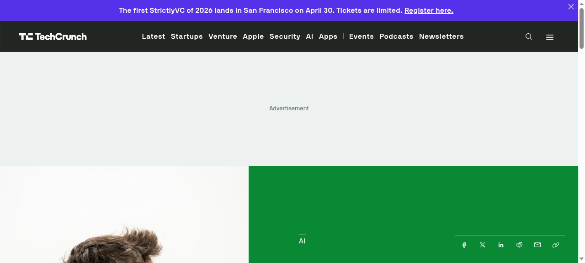

中文
OpenAI 年營收突破 250 億美元，考慮最快 2026 年底公開上市
人工智慧領導企業 OpenAI 在執行長 Sam Altman 的帶領下，於 2026 年 2 月達成了 250 億美元年度化營收的重大里程碑，主要受惠於 ChatGPT Pro 的成功以及深入的企業整合服務。該公司已於 3 月完成 1220 億美元的募資，由亞馬遜、軟銀和 Nvidia 領投。報導指出 OpenAI 正在考慮最快於 2026 年底進行首次公開發行（IPO），而其競爭對手 Anthropic 的年化營收也逼近 190 億美元。

English
OpenAI Surpasses $25 Billion Annualized Revenue, Considering IPO by Late 2026
Under CEO Sam Altman, OpenAI reached a milestone of $25 billion annualized revenue run rate in February 2026, driven by the massive success of ChatGPT Pro and deep enterprise integrations. The company completed a $122 billion funding round in March, led by Amazon, SoftBank, and Nvidia. Reports indicate OpenAI is considering an initial public offering as early as late 2026, while rival Anthropic approaches $19 billion in annualized revenue.